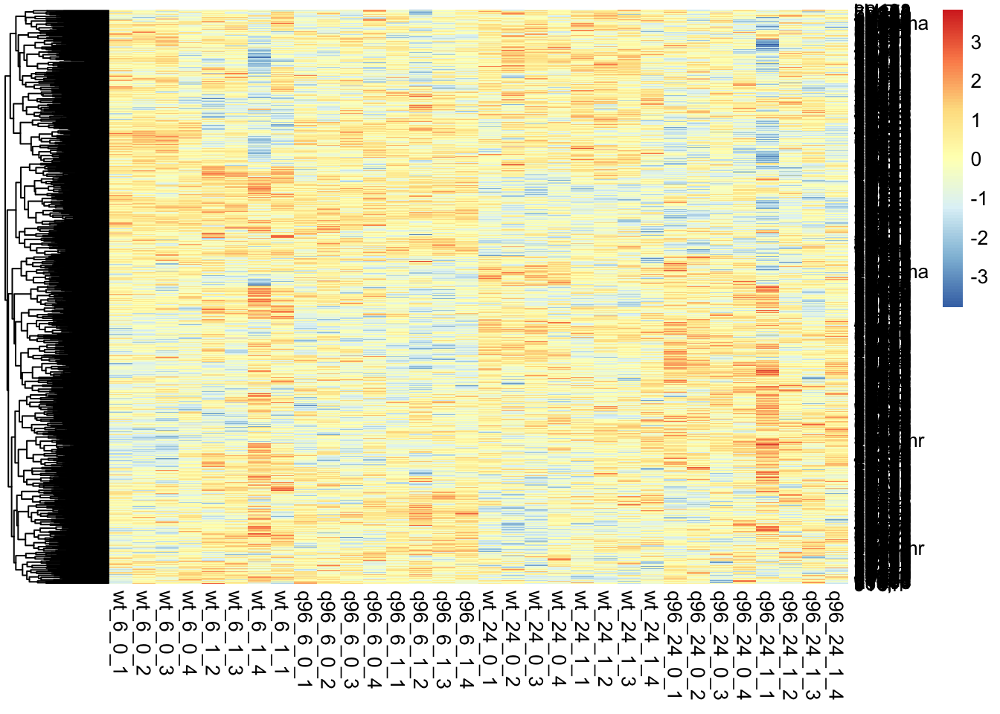
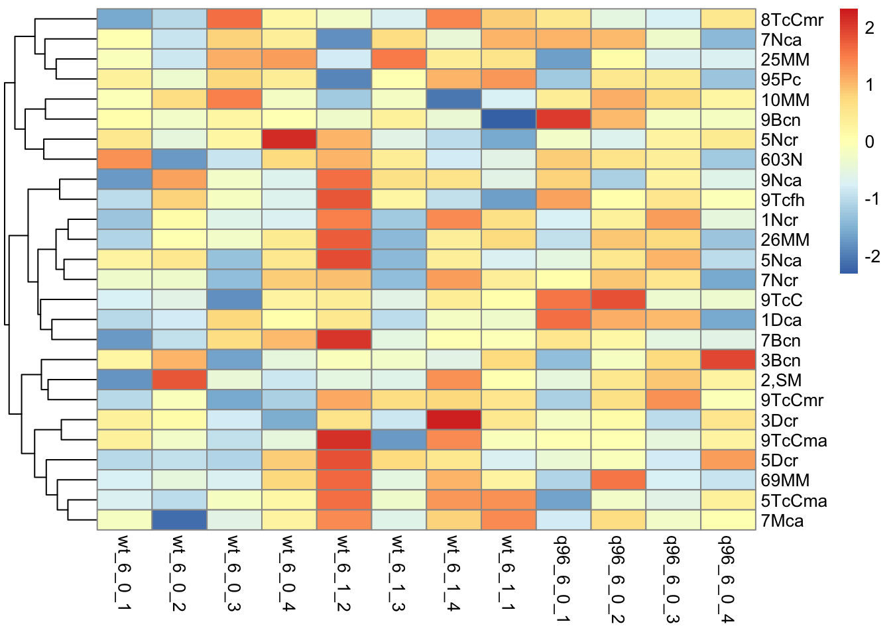
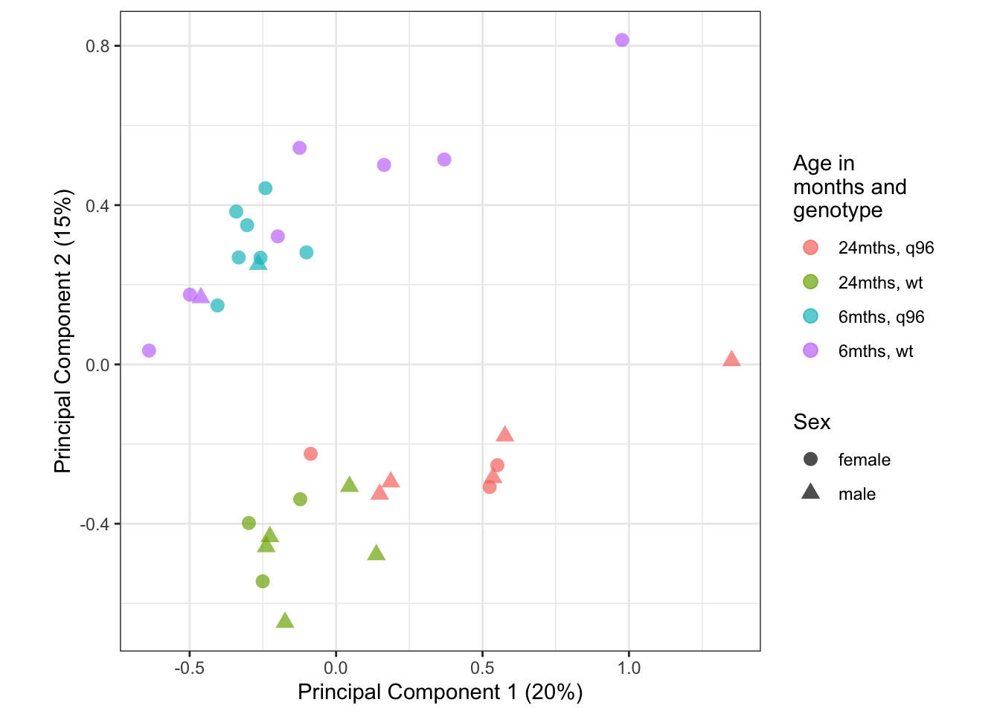
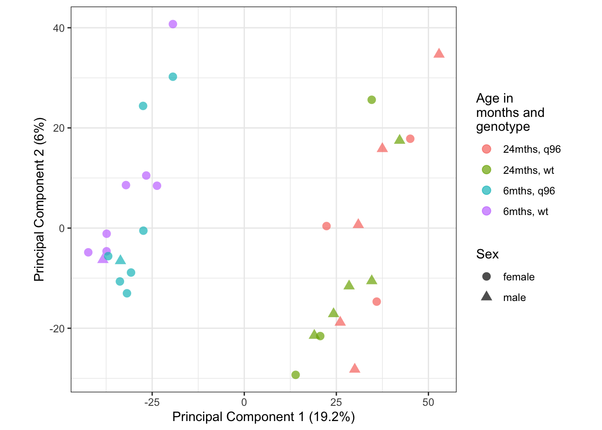

Last updated: 2020-05-21
Checks: 6 1
Knit directory: mousevsfish/
This reproducible R Markdown analysis was created with workflowr (version 1.6.2). The Checks tab describes the reproducibility checks that were applied when the results were created. The Past versions tab lists the development history.
The R Markdown is untracked by Git. To know which version of the R Markdown file created these results, you’ll want to first commit it to the Git repo. If you’re still working on the analysis, you can ignore this warning. When you’re finished, you can run wflow_publish to commit the R Markdown file and build the HTML.
Great job! The global environment was empty. Objects defined in the global environment can affect the analysis in your R Markdown file in unknown ways. For reproduciblity it’s best to always run the code in an empty environment.
The command set.seed(20200504) was run prior to running the code in the R Markdown file. Setting a seed ensures that any results that rely on randomness, e.g. subsampling or permutations, are reproducible.
Great job! Recording the operating system, R version, and package versions is critical for reproducibility.
Nice! There were no cached chunks for this analysis, so you can be confident that you successfully produced the results during this run.
Great job! Using relative paths to the files within your workflowr project makes it easier to run your code on other machines.
Great! You are using Git for version control. Tracking code development and connecting the code version to the results is critical for reproducibility.
The results in this page were generated with repository version 726fdf7. See the Past versions tab to see a history of the changes made to the R Markdown and HTML files.
Note that you need to be careful to ensure that all relevant files for the analysis have been committed to Git prior to generating the results (you can use wflow_publish or wflow_git_commit). workflowr only checks the R Markdown file, but you know if there are other scripts or data files that it depends on. Below is the status of the Git repository when the results were generated:
Ignored files:
Ignored: .Rhistory
Ignored: .Rproj.user/
Ignored: data/.DS_Store
Ignored: data/de/
Ignored: data/enrichment/
Untracked files:
Untracked: Rplot.png
Untracked: Rplot01.png
Untracked: analysis/gsea.Rmd
Untracked: analysis/import-kallisto-1.Rmd
Untracked: analysis/import-kallisto-2.Rmd
Untracked: analysis/import-kallisto-3.Rmd
Untracked: analysis/import-kallisto-data.Rmd
Untracked: analysis/multiplier_test.Rmd
Untracked: analysis/preprocess_mouse_data.Rmd
Untracked: analysis/projectTest.Rmd
Untracked: analysis/projectr-test.Rmd
Untracked: code/combinedGSEA.R
Untracked: data/datasets/
Untracked: data/genesets/
Untracked: data/multiplier/
Untracked: installed_old.rda
Untracked: ~$notes.docx
Unstaged changes:
Modified: analysis/import-data.Rmd
Note that any generated files, e.g. HTML, png, CSS, etc., are not included in this status report because it is ok for generated content to have uncommitted changes.
There are no past versions. Publish this analysis with wflow_publish() to start tracking its development.
MultiPLIER is a PLIER model trained on the entire recount2 dataset. recount2 contains many different RNA-seq human datasets from multiple tissues, cell types, and diseases.
The resulting MultiPLIER model supposedly contains surrogate variables (SVs) that are sensitive compared to a PLIER model trained on one dataset.
From the MultiPLIER paper:
In summary, MultiPLIER’s features have biological relevance and can be directly compared across datasets making it particularly valuable for and a conceptual advance in the integrative analysis of complex human disease.
In order to apply the MultiPLIER model to a dataset, we need to do the following:
GetNewDataB() function.dge_zeb <- readRDS(here("data", "datasets", "zebrafish", "dge.rds"))
dge_zebAn object of class "DGEList"
$counts
wt_6_0_1 wt_6_0_2 wt_6_0_3 wt_6_0_4 wt_6_1_2 wt_6_1_3
ENSDARG00000000001 196.907 336.3001 262.9228 220.8249 249.864 463.4722
ENSDARG00000000002 131.093 217.6999 170.0772 167.1751 141.136 273.5278
ENSDARG00000000018 592.000 1065.0000 752.0000 829.0000 795.000 1241.0000
ENSDARG00000000019 3204.000 5108.0000 3561.0000 3872.0000 3405.000 5793.0000
ENSDARG00000000068 217.000 441.0000 302.0000 285.0000 326.000 535.0000
wt_6_1_4 wt_6_1_1 q96_6_0_1 q96_6_0_2 q96_6_0_3 q96_6_0_4
ENSDARG00000000001 214.2697 214.6166 159.6455 175.8766 256.9751 140.6898
ENSDARG00000000002 303.7303 149.3834 194.3545 137.1234 165.0249 133.3102
ENSDARG00000000018 913.0000 828.0000 621.0000 586.0000 800.0000 569.0000
ENSDARG00000000019 4741.0000 3694.0000 3164.0000 3247.0000 4069.0000 3281.0000
ENSDARG00000000068 342.0000 297.0000 243.0000 233.0000 288.0000 180.0000
q96_6_1_1 q96_6_1_2 q96_6_1_3 q96_6_1_4 wt_24_0_1 wt_24_0_2
ENSDARG00000000001 390.0253 241.329 258.7419 249.4515 314.1703 330.8257
ENSDARG00000000002 292.9747 268.671 250.2581 231.5485 410.8297 330.1743
ENSDARG00000000018 1475.0000 864.000 925.0000 966.0000 790.0000 948.0000
ENSDARG00000000019 5717.0000 4464.000 4666.0000 4517.0000 4693.0000 4229.0000
ENSDARG00000000068 503.0000 330.000 367.0000 374.0000 398.0000 457.0000
wt_24_0_3 wt_24_0_4 wt_24_1_1 wt_24_1_2 wt_24_1_3 wt_24_1_4
ENSDARG00000000001 286.3625 273.4969 287.6616 319.7387 255.3742 222.8791
ENSDARG00000000002 389.6375 353.5031 222.3384 319.2613 245.6258 312.1209
ENSDARG00000000018 838.0000 829.0000 761.0000 876.0000 767.0000 823.0000
ENSDARG00000000019 4344.0000 4888.0000 3830.0000 3830.0000 3809.0000 4375.0000
ENSDARG00000000068 444.0000 444.0000 369.0000 364.0000 429.0000 295.0000
q96_24_0_1 q96_24_0_2 q96_24_0_3 q96_24_0_4 q96_24_1_1
ENSDARG00000000001 276.1545 218.8831 235.3858 188.8943 144.7541
ENSDARG00000000002 319.8455 330.1169 424.6142 327.1057 402.2459
ENSDARG00000000018 886.0000 717.0000 775.0000 728.0000 667.0000
ENSDARG00000000019 4864.0000 3647.0000 4772.0000 4603.0000 3720.0000
ENSDARG00000000068 397.0000 389.0000 360.0000 351.0000 367.0000
q96_24_1_2 q96_24_1_3 q96_24_1_4
ENSDARG00000000001 259.8351 199.8374 189.1448
ENSDARG00000000002 293.1649 356.1626 343.8552
ENSDARG00000000018 863.0000 777.0000 709.0000
ENSDARG00000000019 4032.0000 4082.0000 3378.0000
ENSDARG00000000068 396.0000 281.0000 287.0000
25025 more rows ...
$samples
group lib.size norm.factors
wt_6_0_1 1 17342614 0.995341
wt_6_0_2 1 30040365 1.013081
wt_6_0_3 1 19329223 1.018137
wt_6_0_4 1 20498892 1.008803
wt_6_1_2 1 19930475 1.026132
path
wt_6_0_1 /Volumes/biohub/20170906_Morgan_Hypoxia/3_quantifiedData/transcriptLevel/1_MORGAN_6P_PN1_S2_R1_001
wt_6_0_2 /Volumes/biohub/20170906_Morgan_Hypoxia/3_quantifiedData/transcriptLevel/2_MORGAN_6P_PN2_S5_R1_001
wt_6_0_3 /Volumes/biohub/20170906_Morgan_Hypoxia/3_quantifiedData/transcriptLevel/3_MORGAN_6P_PN3_S10_R1_001
wt_6_0_4 /Volumes/biohub/20170906_Morgan_Hypoxia/3_quantifiedData/transcriptLevel/4_MORGAN_6P_PN4_S8_R1_001
wt_6_1_2 /Volumes/biohub/20170906_Morgan_Hypoxia/3_quantifiedData/transcriptLevel/10_MORGAN_6P_PH2_S9_R1_001
basename id Age Genotype Hypoxia Gender Group
wt_6_0_1 1_MORGAN_6P_PN1_S2_R1_001 6P_PN1 6 wt 0 male wt_6_0
wt_6_0_2 2_MORGAN_6P_PN2_S5_R1_001 6P_PN2 6 wt 0 female wt_6_0
wt_6_0_3 3_MORGAN_6P_PN3_S10_R1_001 6P_PN3 6 wt 0 female wt_6_0
wt_6_0_4 4_MORGAN_6P_PN4_S8_R1_001 6P_PN4 6 wt 0 female wt_6_0
wt_6_1_2 10_MORGAN_6P_PH2_S9_R1_001 6P_PH2 6 wt 1 female wt_6_1
sample
wt_6_0_1 wt_6_0_1
wt_6_0_2 wt_6_0_2
wt_6_0_3 wt_6_0_3
wt_6_0_4 wt_6_0_4
wt_6_1_2 wt_6_1_2
27 more rows ...
$genes
ensembl_gene_id gene_name gene_biotype entrezid
ENSDARG00000000001 ENSDARG00000000001 slc35a5 protein_coding 368418
ENSDARG00000000002 ENSDARG00000000002 ccdc80 protein_coding 368419
ENSDARG00000000018 ENSDARG00000000018 nrf1 protein_coding 64604
ENSDARG00000000019 ENSDARG00000000019 ube2h protein_coding 368425
ENSDARG00000000068 ENSDARG00000000068 slc9a3r1a protein_coding 327272
description
ENSDARG00000000001 solute carrier family 35, member A5 [Source:ZFIN;Acc:ZDB-GENE-030616-55]
ENSDARG00000000002 coiled-coil domain containing 80 [Source:ZFIN;Acc:ZDB-GENE-030616-56]
ENSDARG00000000018 nuclear respiratory factor 1 [Source:ZFIN;Acc:ZDB-GENE-001221-1]
ENSDARG00000000019 ubiquitin-conjugating enzyme E2H (UBC8 homolog, yeast) [Source:ZFIN;Acc:ZDB-GENE-030616-67]
ENSDARG00000000068 solute carrier family 9, subfamily A (NHE3, cation proton antiporter 3), member 3 regulator 1a [Source:ZFIN;Acc:ZDB-GENE-031006-7]
25025 more rows ...ah <- AnnotationHub()snapshotDate(): 2019-10-29# ah %>%
# subset(grepl("rerio", species)) %>%
# subset(rdataclass == "EnsDb")
ensDb <- ah[["AH69169"]] # Ensembl 96 EnsDb for Danio rerioloading from cacherequire("ensembldb")# Get gene info for zebrafish
genes <- genes(ensDb)
genes %<>%
as.data.frame %>%
dplyr::distinct(gene_id, .keep_all=TRUE)# Sometimes biomart doesn't connect so I've saved the mart object out
# zebMart <- useMart("ensembl", "drerio_gene_ensembl")
zebMart <- readRDS(here("data", "datasets","zebrafish", "zebMart.rds"))
getFromBiomart <- c("ensembl_gene_id", "hsapiens_homolog_ensembl_gene")
zebAndHumanEnsGenes <- getBM(getFromBiomart,
values = unique(genes$gene_id),
mart = zebMart) %>%
set_colnames(c("zebrafish_ensembl", "human_ensembl")) %>%
# Only keep zebrafish genes which have human homolog
dplyr::filter(human_ensembl!="") Cache foundah %>%
subset(grepl("sapiens", species)) %>%
subset(rdataclass == "EnsDb")AnnotationHub with 14 records
# snapshotDate(): 2019-10-29
# $dataprovider: Ensembl
# $species: Homo sapiens
# $rdataclass: EnsDb
# additional mcols(): taxonomyid, genome, description,
# coordinate_1_based, maintainer, rdatadateadded, preparerclass, tags,
# rdatapath, sourceurl, sourcetype
# retrieve records with, e.g., 'object[["AH53211"]]'
title
AH53211 | Ensembl 87 EnsDb for Homo Sapiens
AH53715 | Ensembl 88 EnsDb for Homo Sapiens
AH56681 | Ensembl 89 EnsDb for Homo Sapiens
AH57757 | Ensembl 90 EnsDb for Homo Sapiens
AH60773 | Ensembl 91 EnsDb for Homo Sapiens
... ...
AH69187 | Ensembl 96 EnsDb for Homo sapiens
AH73881 | Ensembl 97 EnsDb for Homo sapiens
AH73986 | Ensembl 79 EnsDb for Homo sapiens
AH75011 | Ensembl 98 EnsDb for Homo sapiens
AH78783 | Ensembl 99 EnsDb for Homo sapienshumanEnsDb <- ah[["AH69187"]] # Ensembl 96 EnsDb for Homo sapiensloading from cachehuman_genes <- genes(humanEnsDb) %>%
as.data.frame %>%
dplyr::distinct(gene_id,.keep_all=TRUE)
humanEnsemblAndSymbol <- human_genes %>%
dplyr::select(gene_id, symbol)
zebEns2humanSym <- zebAndHumanEnsGenes %>%
left_join(humanEnsemblAndSymbol, by = c("human_ensembl"="gene_id")) counts_zeb <- dge_zeb %>%cpm(log=TRUE)%>%
as.data.frame %>%
rownames_to_column("zebrafish_ensembl") %>%
left_join(zebEns2humanSym, by = "zebrafish_ensembl") %>%
dplyr::distinct(symbol, .keep_all=TRUE) %>%
dplyr::filter(!is.na(symbol)) %>%
dplyr::filter(symbol!="")%>%
dplyr::select(-human_ensembl, -zebrafish_ensembl) %>%
column_to_rownames("symbol") %>%
as.matrixsaveRDS(counts_zeb, here("data", "multiplier", "zeb_matrix2.rds"))wget --no-check-certificate https://figshare.com/articles/MultiPLIER_Fileset/6982919/2library(PLIER)
model <- readRDS("/fast/users/a1669135/multi-plier/data/recount2_PLIER_data/recount_PLIER_model.RDS")
source(file.path("/fast/users/a1669135/multi-plier/util", "plier_util.R"))
zebMatrix <- readRDS("/fast/users/a1669135/zeb_matrix.rds")
recountRes <- GetNewDataB(zebMatrix, model)
saveRDS(recountRes, "/fast/users/a1669135/recountRes.rds")recountRes <- readRDS(here("data", "multiplier", "recountRes2.rds"))
dim(recountRes)[1] 987 32idx_relevantLV <- c(grep("SVM", rownames(recountRes)))
rownames(recountRes) <- abbreviate(rownames(recountRes))
# Heatmap of all LVs and samples
recountRes %>% pheatmap::pheatmap(scale="row",
cluster_cols = FALSE)
# Subset of some 6 month old samples (WT normoxia, WT hypoxia, mutant normoxia)
# and a subset of the immune cell type LVs
recountRes[idx_relevantLV, c(1:4,5:8,9:12)] %>%
pheatmap::pheatmap(scale="row", cluster_cols = FALSE)
pca <- recountRes %>% t %>% prcomp()
summary(pca) # PC1: 20%, PC2: 15%Importance of components:
PC1 PC2 PC3 PC4 PC5 PC6 PC7
Standard deviation 0.4451 0.3867 0.3154 0.26944 0.23002 0.19989 0.17910
Proportion of Variance 0.1993 0.1504 0.1000 0.07301 0.05321 0.04019 0.03226
Cumulative Proportion 0.1993 0.3497 0.4497 0.52271 0.57593 0.61611 0.64837
PC8 PC9 PC10 PC11 PC12 PC13 PC14
Standard deviation 0.16517 0.1596 0.15109 0.14321 0.13928 0.13395 0.13219
Proportion of Variance 0.02744 0.0256 0.02296 0.02063 0.01951 0.01805 0.01757
Cumulative Proportion 0.67581 0.7014 0.72437 0.74500 0.76451 0.78255 0.80013
PC15 PC16 PC17 PC18 PC19 PC20 PC21
Standard deviation 0.12997 0.12759 0.1229 0.12121 0.11533 0.11448 0.11142
Proportion of Variance 0.01699 0.01637 0.0152 0.01478 0.01338 0.01318 0.01249
Cumulative Proportion 0.81712 0.83349 0.8487 0.86346 0.87684 0.89002 0.90251
PC22 PC23 PC24 PC25 PC26 PC27 PC28
Standard deviation 0.10851 0.10683 0.10434 0.10215 0.09836 0.09637 0.09496
Proportion of Variance 0.01184 0.01148 0.01095 0.01049 0.00973 0.00934 0.00907
Cumulative Proportion 0.91435 0.92583 0.93678 0.94727 0.95700 0.96634 0.97541
PC29 PC30 PC31 PC32
Standard deviation 0.09329 0.09169 0.08566 1.977e-16
Proportion of Variance 0.00875 0.00846 0.00738 0.000e+00
Cumulative Proportion 0.98416 0.99262 1.00000 1.000e+00pca_plot <- pca$x %>%
magrittr::extract(, c("PC1", "PC2")) %>%
as.data.frame() %>%
rownames_to_column("samples") %>%
left_join((dge_zeb$samples %>% rownames_to_column("samples")), by="samples") %>%
ggplot(aes(x=PC1, y = PC2,
colour = as.factor(paste0(Age, "mths, ", Genotype)),
shape = Gender)) +
geom_point(alpha = 0.7,size=3) +
theme(aspect.ratio = 1) +
labs(x = "Principal Component 1 (20%)",
y = "Principal Component 2 (15%)",
colour = "Age in \nmonths and \ngenotype", shape = "Sex")
pca_plot
pca_orig <- dge_zeb %>% cpm(log=TRUE) %>% t %>% prcomp()
summary(pca_orig) # PC1: 19.2%, PC2: 6%Importance of components:
PC1 PC2 PC3 PC4 PC5 PC6
Standard deviation 32.7870 18.28904 17.55036 16.39476 15.76348 14.97463
Proportion of Variance 0.1915 0.05959 0.05488 0.04789 0.04427 0.03995
Cumulative Proportion 0.1915 0.25112 0.30599 0.35388 0.39815 0.43810
PC7 PC8 PC9 PC10 PC11 PC12
Standard deviation 13.82294 13.55283 12.99557 12.6928 12.43654 12.34447
Proportion of Variance 0.03404 0.03272 0.03009 0.0287 0.02756 0.02715
Cumulative Proportion 0.47214 0.50487 0.53496 0.5637 0.59122 0.61837
PC13 PC14 PC15 PC16 PC17 PC18
Standard deviation 11.80978 11.77567 11.59993 11.44900 11.28625 11.09098
Proportion of Variance 0.02485 0.02471 0.02397 0.02335 0.02269 0.02192
Cumulative Proportion 0.64321 0.66792 0.69189 0.71525 0.73794 0.75986
PC19 PC20 PC21 PC22 PC23 PC24
Standard deviation 10.94333 10.85024 10.74742 10.67808 10.62998 10.47855
Proportion of Variance 0.02134 0.02097 0.02058 0.02031 0.02013 0.01956
Cumulative Proportion 0.78119 0.80217 0.82274 0.84306 0.86319 0.88275
PC25 PC26 PC27 PC28 PC29 PC30
Standard deviation 10.17287 10.08982 9.98698 9.76654 9.50397 9.26861
Proportion of Variance 0.01844 0.01814 0.01777 0.01699 0.01609 0.01531
Cumulative Proportion 0.90119 0.91933 0.93710 0.95409 0.97018 0.98549
PC31 PC32
Standard deviation 9.02472 6.269e-14
Proportion of Variance 0.01451 0.000e+00
Cumulative Proportion 1.00000 1.000e+00pca_orig_plot <- pca_orig$x %>%
magrittr::extract(, c("PC1", "PC2")) %>%
as.data.frame() %>%
rownames_to_column("samples") %>%
left_join((dge_zeb$samples %>% rownames_to_column("samples")), by="samples") %>%
ggplot(aes(x=PC1, y = PC2,
colour = as.factor(paste0(Age, "mths, ", Genotype)),
shape = Gender)) +
geom_point(alpha = 0.7,size=3) +
theme(aspect.ratio = 1) +
labs(x = "Principal Component 1 (19.2%)",
y = "Principal Component 2 (6%)",
colour = "Age in \nmonths and \ngenotype", shape = "Sex")
pca_orig_plot
Surprisingly, despite only having 987 features (latent variables) in the MultiPLIER model, the PCA somehow even looks better than the one based on ~25,000 genes. Weirdly enough the mutant samples which looked kind of like outliers in the plot with all genes group back with their group in the LV PCA.
Separation by genotype isn’t 100% across PC1. It looks like at 6 months of age, the mutant samples can’t really be separated from the WT samples either.
Separation by age is still retained across PC2. However, this was already an incredibly strong effect in the gene PCA.
This would suggest that the effects on gene expression through the Q96_K97del/+ genotype may be too subtle to be able to be captured through such a small set of latent variables.
Will test out CoGAPs and ProjectR as well just to see if non-negative matrix factorisation has any utility at all.
Seeing as we’ve previously gotten really clean and interpretable results using standard gene set enrichment testing methods with Hallmark / KEGG gene set collections, I would say that those approaches seem more reliable for our aims.
Limitations:
I used MultiPLIER with default settings and parameters. The model is intended to be easily transferred to any dataset, so would have expected it to give some decent results, but it seems it just didn’t really work here, so not much point further tuning settings.
MultiPLIER was created based on human RNA-seq data. Not all human genes have zebrafish homologs, so it’s possible that the LVs determined in humans may not apply to zebrafish. However, considering that MSigDB gene sets easily give interpretable results in zebrafish, I’m not sure.
This study used MultiPLIER to get additional insight into differences between tumour subtypes and found it wasn’t super informative at distinguishing between the subtypes (subtypes had similar distributions of LV expression and PCA was similar to original with genes). More analysis at their GitHub.
sessionInfo()R version 3.6.3 (2020-02-29)
Platform: x86_64-apple-darwin15.6.0 (64-bit)
Running under: macOS Mojave 10.14.6
Matrix products: default
BLAS: /Library/Frameworks/R.framework/Versions/3.6/Resources/lib/libRblas.0.dylib
LAPACK: /Library/Frameworks/R.framework/Versions/3.6/Resources/lib/libRlapack.dylib
locale:
[1] en_AU.UTF-8/en_AU.UTF-8/en_AU.UTF-8/C/en_AU.UTF-8/en_AU.UTF-8
attached base packages:
[1] stats4 parallel stats graphics grDevices utils datasets
[8] methods base
other attached packages:
[1] ensembldb_2.10.2 AnnotationFilter_1.10.0 GenomicFeatures_1.38.2
[4] GenomicRanges_1.38.0 GenomeInfoDb_1.22.1 ggplot2_3.3.0
[7] tibble_3.0.1 edgeR_3.28.1 limma_3.42.2
[10] dplyr_0.8.5 magrittr_1.5 org.Hs.eg.db_3.10.0
[13] AnnotationDbi_1.48.0 IRanges_2.20.2 S4Vectors_0.24.4
[16] Biobase_2.46.0 biomaRt_2.42.1 AnnotationHub_2.18.0
[19] BiocFileCache_1.10.2 dbplyr_1.4.3 BiocGenerics_0.32.0
[22] here_0.1 PLIER_0.99.0 qvalue_2.18.0
[25] rsvd_1.0.3 knitr_1.28 glmnet_4.0
[28] Matrix_1.2-18 pheatmap_1.0.12 gplots_3.0.3
[31] RColorBrewer_1.1-2
loaded via a namespace (and not attached):
[1] colorspace_1.4-1 ellipsis_0.3.1
[3] rprojroot_1.3-2 XVector_0.26.0
[5] fs_1.4.1 farver_2.0.3
[7] bit64_0.9-7 interactiveDisplayBase_1.24.0
[9] codetools_0.2-16 splines_3.6.3
[11] workflowr_1.6.2 Rsamtools_2.2.3
[13] shiny_1.4.0.2 BiocManager_1.30.10
[15] compiler_3.6.3 httr_1.4.1
[17] backports_1.1.7 lazyeval_0.2.2
[19] assertthat_0.2.1 fastmap_1.0.1
[21] later_1.0.0 htmltools_0.4.0
[23] prettyunits_1.1.1 tools_3.6.3
[25] gtable_0.3.0 glue_1.4.1
[27] GenomeInfoDbData_1.2.2 reshape2_1.4.4
[29] rappdirs_0.3.1 Rcpp_1.0.4
[31] vctrs_0.3.0 Biostrings_2.54.0
[33] gdata_2.18.0 rtracklayer_1.46.0
[35] iterators_1.0.12 xfun_0.13
[37] stringr_1.4.0 mime_0.9
[39] lifecycle_0.2.0 gtools_3.8.2
[41] XML_3.99-0.3 zlibbioc_1.32.0
[43] scales_1.1.1 ProtGenerics_1.18.0
[45] hms_0.5.3 promises_1.1.0
[47] SummarizedExperiment_1.16.1 yaml_2.2.1
[49] curl_4.3 memoise_1.1.0
[51] stringi_1.4.6 RSQLite_2.2.0
[53] BiocVersion_3.10.1 foreach_1.5.0
[55] caTools_1.18.0 BiocParallel_1.20.1
[57] shape_1.4.4 rlang_0.4.6
[59] pkgconfig_2.0.3 bitops_1.0-6
[61] matrixStats_0.56.0 evaluate_0.14
[63] lattice_0.20-41 purrr_0.3.4
[65] labeling_0.3 GenomicAlignments_1.22.1
[67] bit_1.1-15.2 tidyselect_1.1.0
[69] plyr_1.8.6 R6_2.4.1
[71] DelayedArray_0.12.3 DBI_1.1.0
[73] pillar_1.4.4 withr_2.2.0
[75] RCurl_1.98-1.2 crayon_1.3.4
[77] KernSmooth_2.23-17 rmarkdown_2.1
[79] progress_1.2.2 locfit_1.5-9.4
[81] grid_3.6.3 blob_1.2.1
[83] git2r_0.27.1 digest_0.6.25
[85] xtable_1.8-4 httpuv_1.5.2
[87] openssl_1.4.1 munsell_0.5.0
[89] askpass_1.1